Töltés-játék. A sárgával jelölt töltést kell eljuttatni a célba újabb töltések elhelyezésével. Lehet mozgó és statikus töltéseket is elhelyezni, amik a fizikának megfelelő mozgást végeznek. A pontozásnál figyelembe veszi az elhelyezett töltések számát és a célba éréshez szükséges időt. Toplistán nyilván van tartva a 10 legtöbb pontot szerzett játékos és 10 db játék mentésre van lehetőség. A játék újraindításakor egyből folytathatjuk az előző játékunkat.
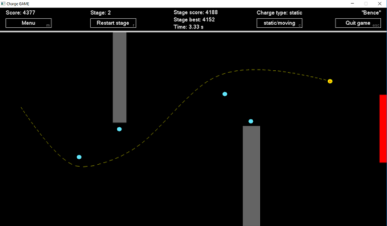Én egy 3D-s sugárkövető programot írtam. A program egyszerű koordinátageometriát használ (egyenes, gömb, sík egyenlete, skaláris szorzat). A képalkotás úgy működik, hogy a térben létrehozok egy egyenesekből álló mátrixot és ezeknek az egyeneseknek a testekkel való legközelebbi metszéspontjában veszem a test normálvektorát, ebből skaláris szorzattal számolom ki az árnyalatot. A program rekurzív tükröződést is használ.
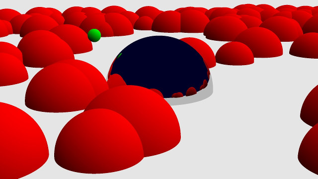Egy kicsit felturbózott snake játék. Az eredeti játéktól eltér abban, hogy a szegmensek a síkon szabadon mozognak, illetve nem csak normál ételek szedhetőek össze. Van gyorsító, másokat lassító és összezavaró illetve halhatatlanság képesség amivel más kígyók átvághatóak lesznek. A játék támogat kontrollert és billentyűzetet is, így akár 16 játékos is játszhat keyboard-ghosting nélkül.
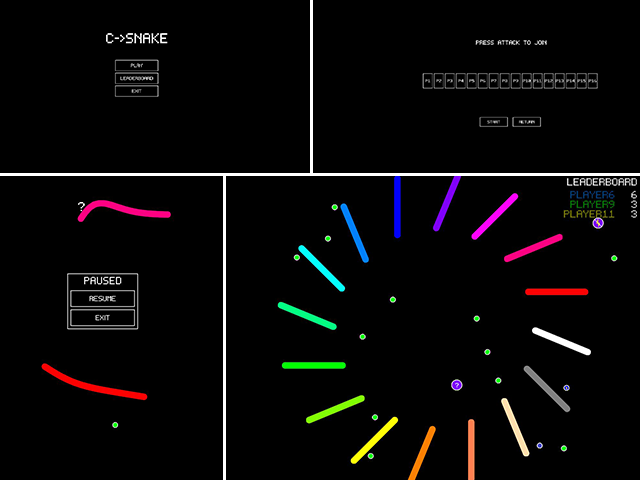A játék célja a teljes pálya nagy részének elfoglalása a nyancattel. A nehezítés pedig, hogy a pattogó rózsaszín labdákkal nem szabad érintkezni. A játékos több pontot kap, ha egyszerre nagyobb területet kerít körbe, mintha részenként tenné. Lehet kockáztatni a több pont reményében, de pontlevonással jár a labdákkal való ütközés. Mind a 3 élet elvesztése pedig a megszerzett terület törlésével is jár.
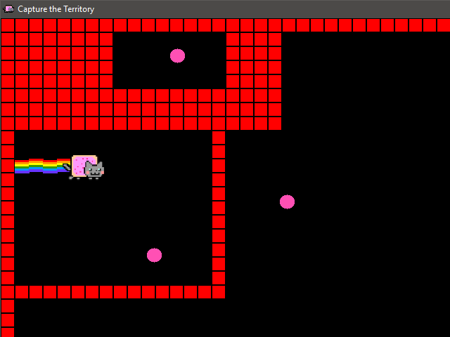A Coder a napjainkban népszerű randevús alkalmazás, a Tinder mására készült játék. Az egyetlen jelentős különbség, hogy a valós alkalmazással ellentétben, nem profilképek, hanem C nyelven íródott forráskódok alapján kell eldöntenünk egy-egy partner szimpatikusságát. A játék lényege, hogy a rendelkezésre álló idő alatt, a lehető legtöbb forráskódról döntsük el helyességüket. A program az InfoC oldalon található programrészletekből készült adatbázisból választja ki véletlenszerűen az aktuális forráskódot. Az idő lejártával az elért pontszám alapján, a program kiválasztja a hozzánk legjobban illő programozót.
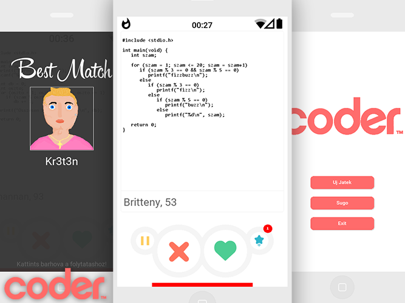A program egy „Gonosz akasztófa” játék, ami abban különbözik a hagyományos akasztófa játéktól, hogy a látszattal ellentétben valójában a gép nem „gondol egy szóra”, hanem a felhasználó tippjei alapján mindig úgy szűkíti a szóba jöhető szavak halmazát, hogy a lehető legkevesebb segítséget adjon a felhasználónak.
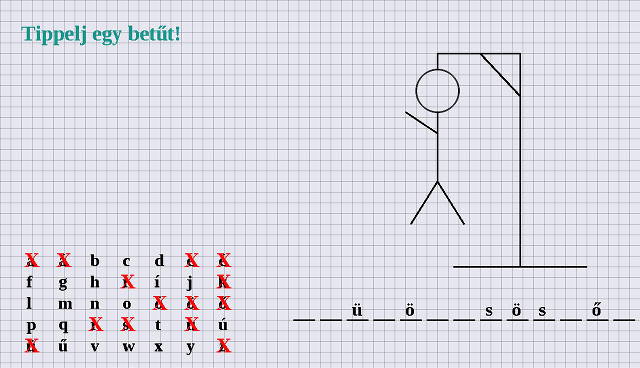This Is The Life. Egy Retro Dungeon Crawler. A játékom egy tribute az 1986-ban kiadott Might And Magic Book One-hoz. Csak a billentyűzettel lehet vezérelni, így lehet egy több pályás labirintust felfedezni, ellenségekkel harcolni, szintet lépni, mindezt pszeudo 3D-s belső nézetből. A grafikák részben részben az én, részben a szobatársam, Nemes Mátyás, a készítményei. (A tört angol nem bug, hanem feature! :))
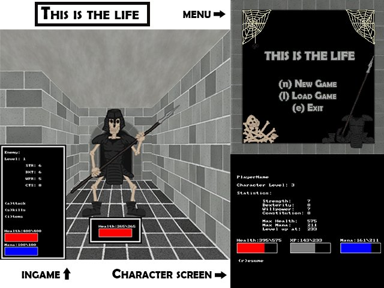Körökre osztott Blokus játék megvalósítása több játékos számára. A játékosok célja, hogy minél több különböző formájú elemet el tudjanak helyezni a játéktáblán úgy, hogy azok a lehető legnagyobb területet foglalják el. A játék elején minden játékos kiválaszt egy különböző színt, majd a tábla egy-egy sarkában egymás után kezdenek. Ezt követően a játékosoknak úgy kell elhelyezniük azonos színű elemeiket, hogy azok egymás sarkával érintkezzenek, de éleikkel ne. Egy játékos számára akkor ér véget a játék, amikor már nem tud lerakni több elemet. A játék győztese a játéktábla legtöbb celláját elfoglaló játékos.
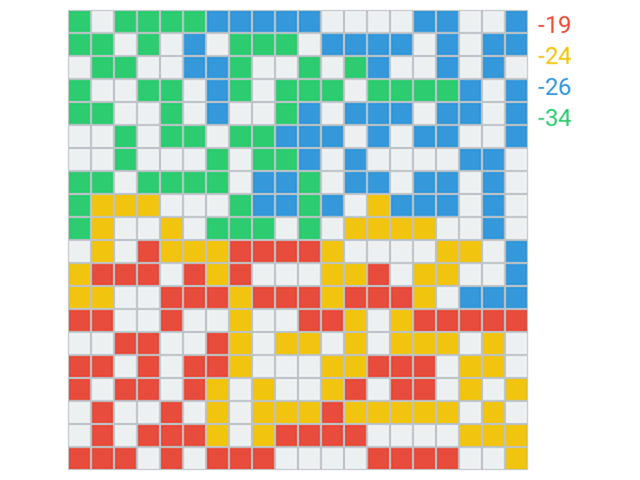Kígyó szimulátor! Élethű grafika, lenyűgöző játékélmény! A szimulátorban egy sárga anakonda (Eunectes notaeus) bőrébe bújhatunk, idilli környezetben, egy zöldellő tisztáson irányíthatjuk a kígyót. A megjelenő almák elfogyasztásával az anakonda hossza megnő, csakúgy mint a valóságban! Lehetőség van egy időben két egyed szimulálására, de ekkor is csak egy alma jelenik meg egyszerre, és a kígyóknak meg kell küzdeniük érte! A szimuláció véget ér, ha valamelyik kígyó önmagának vagy a másik kígyónak ütközik, vagy megszökik a tisztásról. Szerencsére bármikor újrakezdhetjük!
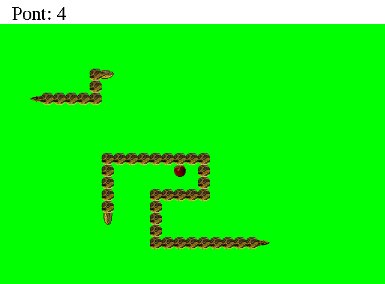A program egy szöveges kalandjáték, a játékos feladata, hogy a megfelelő döntéseket hozva kiszabadítsa a főhős barátját a démonok fogságából. Ehhez segítségül vásárolhat felszerelést, fegyvert, varázsszereket, amelyek növelik a harci értékeit. Ha ez sem elég a győzelemhez, és háromszor meghal, a nekromanta többé nem hajlandó feltámasztani (amint az a képen látszik).
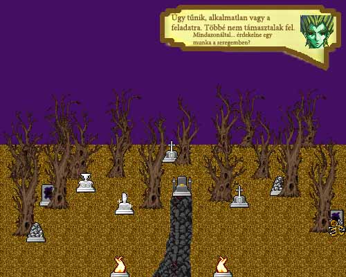Egy egyszerű doboztologatós logikai játékot készítettem el. A program érdekessége, hogy visszalépni is tudsz benne, ha véletlenül elrontottad, de a lépésszám ilyenkor is nő. A játékot a neved megadása után tudod elkezdeni, és mindig látod, hogy Te melyik pályákat teljesítetted eddig. A rekordokat kétféleképpen is ki tudja listázni: játékos vagy pálya szerint lebontva. A pályák nehézsége vegyes, kezdve az egészen egyszerűektől megtalálhatóak benne különös kihívást jelentőek is, így mindenkinek tudom ajánlani a kipróbálását.
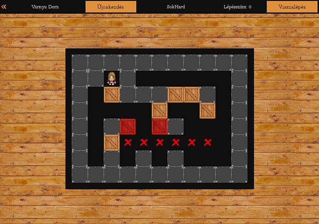